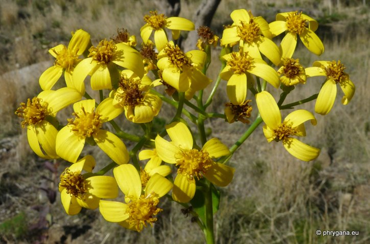
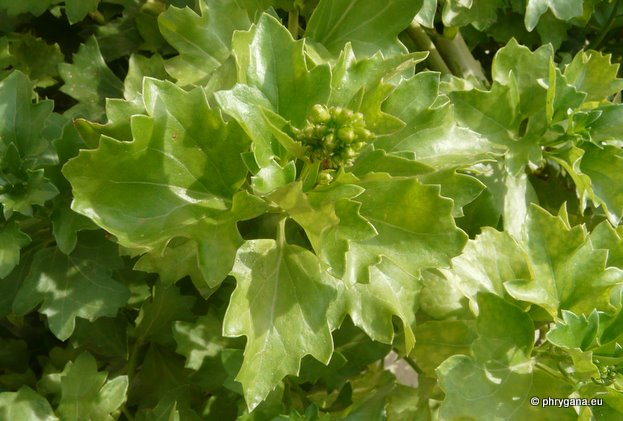
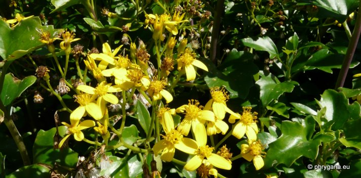
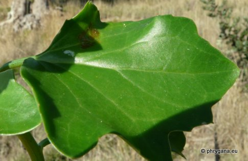
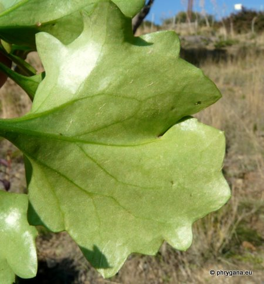
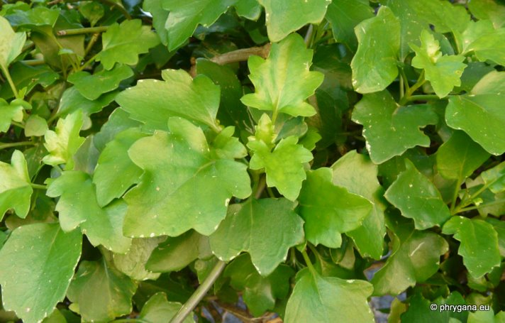

| PHRYGANA | Fauna | Flora | nouveautés | liste des espèces |
contact -
info - commentaires phrygana1 (at) gmail.com |
| Particularités crétoises | Galles et mines | ressources naturelles |
| Senecio angulatus L. f. |
| 314 | Flora | ASTERACEAE | Senecioneae Cass. | Senecio L. |
|
 Senecio angulatus Kalamaki 16 janvier 2012 |
| fr: le Séneçon anguleux en: Creeping Groundsel, Cape Ivy | |
| Plante vivace grimpante, glabre; tiges vertes, parfois rougeâtres | |
| Feuilles: ovales à triangulaires, charnues, lisses, vert brillant, dentées (2 - 3 dents par côté), lobées, à marges un peu ondulées; feuilles spérieures à peine ou pas lobées; grandeur des feuilles très variables (4-12 cm x 2-5 cm); face inférieure assez pruineuse; pétiole variant de 1 à 4 cm | |
| Fleurs: inflorescenceen cyme lâche, avec de nombreux capitules (8 - 20) larges de 7 - 15 mm. Fleurs ligulées (4 - 6) et tubulées (10 - 16) jaunes. | |
| Fruit: akènes de 3 - 4 mm, sillonnés ou côtelés, brun clair; pappus 5 - 7 mm | |
| Type biologique: hémicryptophyte lianeux ramifié | |
| Hauteur: 150- 600 cm | |
| Floraison: octobre novembre décembre janvier février | |
| Altitudes: 0 - 850 m | |
| Statut en Crète: cultivée et en voie de naturalisation | |
| Biotopes en Crète: fossés, haies, jardins, bords des routes, terrains vagues,souvent près des habitations | |
| Distribution: région Méditerranéenne, Afrique, Australie, devenant subcosmopolite, introduite souvent comme plante d'ornement | |
| Origine: Afrique du Sud | |
| Note: la plante, lorsque naturalisée, peut être envahissante; s'enracine facilement par l'extrémité des tiges touchant le sol; se multiplie par fragments ou par dispersion des graines | |
|
 Senecio angulatus Odigitria (Listaros) 08 octobre 2011 |
|
 Senecio angulatus Plakias 22 janvier 2012 |
|

 Senecio angulatus Kalamaki 16 janvier 2012 |
|
 Senecio angulatus Plakias 22 janvier 2012 |
| 25 janvier 2012 |
| © paul fontaine -- © Phrygana.eu 2007 -- 2013 |